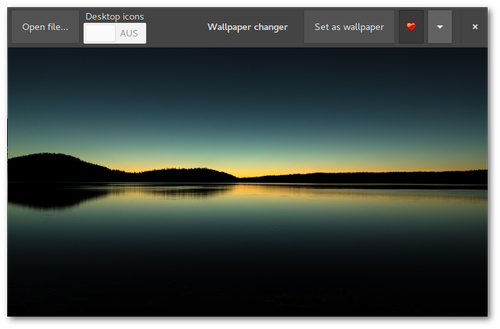

NoN: Konsoledierung
Knights of Ni - jetzt wird's schick
Einmal eingerichtet, benötigt man für das Befeuern einer Nikola-angetriebenen Seite nur einen Dateimanager, einen Editor, ein Terminal und normalerweise zwei Kommandos.
Und weil ich es gern bequem habe, habe ich mir etwas Unterstützung dafür gebastelt.
Was bisher geschah
Die per Button aufgerufenen Nikola-Kommandos wurden bisher folgendermaßen verarbeitet:
- nikola build lief im Hintergrund als subprocess.run(cmd)
- nikola github_deploy wurde im separaten Terminalfenster ausgeführt; dieses wurde nach der erfolgreichen Ausführung wieder geschlossen
Und das soll jetzt alles vorbei sein?
Neu ist immer besser.
—Barney Stinson
Die Oberfläche ist nun per Gtk.Stack zweigeteilt. Per Gtk.StackSwitcher in der Headerbar lässt sich zwischen der normalen Oberfläche und einem Terminal hin- und herwechseln.
Dies hat mehrere Eigenschaften und Vorteile:
- Das Teminal öffnet sich im aktuellen Verzeichnis der Nikola-Instanz.
- Das Terminal kann beliebig verwendet werden.
- Beim exit wird es nur resettet.
- build und github_deploy werden in diesem Terminal ausgeführt, wenn sie über die Oberfläche (Buttons) gestartet werden.
- Beim Ausführen über die Buttons wechselt der Focus auf das Terminal und nach Beenden des Tasks wieder zurück zur Oberfläche. Mit super Überblende (aktivierte Animationen erforderlich)!
- Optisch aufgeräumter, da kein separates Fenster mehr benötigt wird.

Media player with VLC
Contents
Creating a media player with LibVLC
VLC is not just a multimedia player but also a framework with Python bindings available. In this example app a simple media player will be set up via LibVLC (see also the GStreamer mediaplayer article).

LibVLC
The installation of the VLC Python bindings are mandatory. The package is coomonly found under the name python-vlc.
Glade
- display area of the media file: Gtk.DrawingArea widget
- control elements: skip for-/backward (Gtk.Button), pause/resume playback (Gtk.Togglebutton)
- select media: buttons to show video or image file
- manipulate playback: buttons to mute and rotate video
Python
Set up player
The VLC player is initiated when the corresponding widget (Gtk.DrawingArea) is drawn. The realize is required for that task. This signal in general is available for the widget class.
vlcOptions = "--no-xlib" win_id = widget.get_window().get_xid() setup_player(vlcOptions) vlcInstance = vlc.Instance(options) player = vlcInstance.media_player_new() player.set_xwindow(win_id)
Given options can be regular VLC commandline options. In the example app a click on the "rotate" button turns the video 180 degrees. Therefore the player must be initiated again with the option --video-filter=transform{type=180} given.
Media playback
Just like the GStreamer player VLC is capable of showing various video, audio and image formats.
player.set_mrl(file_url) #start playback player.play() #pause/resume playback player.pause()
Position scale
The implementation of the progress bar using a slide control is pretty simple.
#retrieve position player.get_position() #define positition player.set_position(val)
Possible values are float numbers between 0 and 1. These functions are quite resource demanding resulting into stuttering playback. In this example the get_position is avoided by retrieving the slider position instead of the video.
Possibilities and limitations
Working with LibVLC Python bindings is easy and intuitive in contrast to GStreamer. In addition the "headerbar problem" is non-existent.
On the other hand it is not quite minimalistic to resort to a huge and indepentant project. You will have to install VLC and Python bindings instead of just importing the GStreamer module from the GObject Introspection repository.
The overall consumption of resources is bigger.
Media player with GStreamer
Contents
Creating a media player with GStreamer 1.x
GStreamer is a multimedia framework that can be used ti show (de)code and otherwise alter media files.

Glade
- display area of the media file: Gtk.DrawingArea widget
- control elements: skip for-/backward (Gtk.Button), pause/resume playback (Gtk.Togglebutton)
- select media: buttons to show video or image file
Python
Set up player
Elements and pipelines
GStreamer manages all kinds of media data streams. Every step in the procession chain is defined as an element connected to pipelines. A common pipeline consists of "source", "filter"/"decode" and "sink" elements.
------------------------------------------------------ | pipeline | | | | ------------- ---------------- -------------- | | | source | | filter | | sink | | | | |->>| decoder |->>| | | | | input | | processing | | output | | | ------------- ---------------- -------------- | ------------------------------------------------------
This is done by the Gst module:
#init Gst and create pipeline Gst.init() pipeline = Gst.Pipeline() #create elements src = Gst.ElementFactory.make("filesrc","source") decode = Gst.ElementFactory.make("decodebin","decode") sink = Gst.ElementFactory.make("xvimagesink") #configure elements src.set_property("location",file_location) #add elements to pipeline pipeline.add(src) pipeline.add(decode) pipeline.add(sink) #link elements together src.link(decode) decode.link(sink)
Predefined pipelines
There are plenty of possibilities such like handling audio and video signals separated from each other by assigning a "videosink" and an "audiosink" and so on. On the other hand there are given pipelines for standard tasks like media playback. In this case there can be made use of the "playbin" element which also significantly reduces the code:
Gst.init(None) player = Gst.ElementFactory.make("playbin","player") sink = Gst.ElementFactory.make("xvimagesink") player.set_property("uri",uri_of_file) player.set_property("video-sink", sink)
And action!
A pipeline or playbin element can now be controled by Gst.STATE: .. code-block:: python
player.set_state(Gst.State.PLAYING) player.set_state(Gst.State.PAUSED)
Progress bar
The video progress in this example will not be visualized by a Gtk.ProgressBar but by a horizontal Gtk.Scale. This widget allows to manually set a position with the mouse instead of just showing a value using the value-changed signal. Strictly speaking the change-value signal is a much cleaner solution here which will be used in the follow-up article on relizing the media player with LibVLC.
Possibilities and limitations
Getting to know how to utilize GStreamer there appear a bunch of obstacles (read as: the incompetent author of this article tend to widely generalize based on her experiences):
There are plenty of tutorials but two circumstances make them difficult to comply with:
- The primary language in GStreamer is C. Good luck with your Python stuff.
- Many older tutorials and manuals do not work out of the box because of major version leap of both GStreamer (0.10 to 1.x) and Python (2.x auf 3.x).
In addition there are effects that are hard to understand. The example given in this article does not work if the Gtk window contains a headerbar. In theory this should be solved by using the "gtksink" but I haven't figured out yet how to assign that sink to a specific widget.
GPT: v0.4 Release
JFTR: GoProTool v0.4 release
Some minor changes/fixes for the project. Recent development status is available as a (pre-)release: Release v0.4 "scarlatina".
NEW:
- import files from any directory (and not just from detected SD cards) with corresponding button added to the toolbar
FIXED:
- folder selection on import
- progress status on video import
"FIXED":
- headerbar removed from the media preview version because no images on playback
Note
This issue will probably be fixed by switching to LibVLC instead of GStreamer, see also LibVLC tutorial article.

The GSettings configuration storage system
Contents
Manage application settings with GNOME's GSettings
GSettings is the central application configuration system of the GNOME desktop. Settings are stored in binary form so you will need to use a low-level configuration tool which provides a backend for GSettings. This can be either have a graphical (dconf-editor) or commandline interface (gsettings).
In this article's example background images will be read, set and bookmarked.
{kind=link}
Schemas
An initial configuration for an application is defined in a schema file. This XML formatted text file then will be transformed into its machine readable equivalent.
This is an example for a schema file with one property (key):
<schemalist> <schema id="org.gtk.Test" path="/org/gtk/Test/"> <key name="string-key" type="s"> <default>""</default> <summary>A string</summary> <description> Configuration key defined for a string. Default value is set to an empty string. </description> </key> </schema> </schemalist>
The nomenclature for the file is "schema.id.gschema.xml". The standard installation directory for schema files is /usr/share/glib-2.0/schemas. Schema files can also be stored outside of this folder (p.e. local, for testing purposes) but these will not be shown by dconf-editor.
Now the schema files must be compiled
glib-compile-schemas /path/to/schema/files/ #default directory glib-compile-schemas /usr/share/glib-2.0/schemas/
The compiled file which is now used by GSettings is named gschemas.compiled.
Glade
For displaying image files the GtkImage widget is required. All controls of the example app are placed in the headerbar:
- "Open File" button: opens FileChooserDialog
- switch: turns desktop icons on or off
- "Fav" togglebutton: bookmarks file drawn in the image widget, shows whether image file is bookmarked as favourite
- "Set as wallpaper" button: use file as background image
- MenuButton: list of bookmarked files
Python
Load global schema
Load an existing configuration:
setting = Gio.Settings.new("full.schema.path") #load desktop background configuration setting = Gio.Settings.new("org.gnome.desktop.background")
Load local schema
If the schema file is not stored in the standard directory the location of the schemas.compiled file must be given first:
schema_source = Gio.SettingsSchemaSource.new_from_directory(os.getcwd(), Gio.SettingsSchemaSource.get_default(), False) schema = Gio.SettingsSchemaSource.lookup(schema_source,"org.example.wallpaper-changer",False) setting = Gio.Settings.new_full(schema, None, None)
Bind widget
It is possible to directly bind GSettings properties to a widget. Property statuses then can be displayed or manipulated:
setting.bind("setting-key", widget, property, Gio.SettingsBindFlags...)
In the example app this is done with the switch widget:
self.bg_setting.bind("show-desktop-icons", self.obj("switch"), "active", Gio.SettingsBindFlags.DEFAULT)
The switch shows the current configuration status on application startup. Changes on the switch control button are applied instantly.
Get and set values
Property settings can be retrieved and defined by get_"type" and set_"type". The relevant function to use is dependent on the key type, use get_string and set_string for strings, get_int and set_int for interger and so on (see PyGObject API Reference).
A property value request via get_value(key) returnes a value of type GLib.Variant. Therefore the set_value(key) function also requires this datatype.
Value contents can be converted into simple datatypes:
#return string setting.get_value(key).get_string() #return anything (list, string, bool etc.) setting.get_value(key).unpack()
and vice versa:
setting.set_value(key, GLib.Variant(string_type, value)
The GNOME developer documentation provides a list of avaliable string types.
In the example app this is used to update the bookmark list:
app_setting.set_value("favourites", GLib.Variant('as',fav_list))
Listings
Schema
org.example.wallpaper-changer.gschema.xml (Source)
<?xml version="1.0" encoding="utf-8"?> <schemalist> <schema path="/org/example/wallpaper-changer/" id="org.example.wallpaper-changer"> <key name="favourites" type="as"> <default>[]</default> <summary>List of favourite wallpapers</summary> <description> Add or remove entry by pressing the 'fav' toggle button. </description> </key> </schema> </schemalist>
Glade
<?xml version="1.0" encoding="UTF-8"?> <!-- Generated with glade 3.20.0 --> <interface> <requires lib="gtk+" version="3.20"/> <object class="GtkFileFilter" id="filefilter"> <mime-types> <mime-type>image/*</mime-type> </mime-types> </object> <object class="GtkImage" id="image1"> <property name="visible">True</property> <property name="can_focus">False</property> <property name="icon_name">emblem-favorite</property> </object> <object class="GtkMenu" id="menu"> <property name="visible">True</property> <property name="can_focus">False</property> </object> <object class="GtkApplicationWindow" id="window"> <property name="can_focus">False</property> <signal name="destroy" handler="on_window_destroy" swapped="no"/> <signal name="size-allocate" handler="on_window_size_allocate" swapped="no"/> <child> <object class="GtkImage" id="image_area"> <property name="width_request">400</property> <property name="height_request">300</property> <property name="visible">True</property> <property name="can_focus">False</property> <property name="stock">gtk-missing-image</property> </object> </child> <child type="titlebar"> <object class="GtkHeaderBar"> <property name="visible">True</property> <property name="can_focus">False</property> <property name="title">Wallpaper changer</property> <property name="has_subtitle">False</property> <property name="show_close_button">True</property> <child> <object class="GtkButton" id="open_button"> <property name="label" translatable="yes">Open file...</property> <property name="visible">True</property> <property name="can_focus">True</property> <property name="receives_default">True</property> <signal name="clicked" handler="on_open_button_clicked" swapped="no"/> </object> </child> <child> <object class="GtkBox"> <property name="visible">True</property> <property name="can_focus">False</property> <property name="orientation">vertical</property> <child> <object class="GtkLabel"> <property name="visible">True</property> <property name="can_focus">False</property> <property name="label" translatable="yes">Desktop icons</property> </object> <packing> <property name="expand">False</property> <property name="fill">True</property> <property name="position">0</property> </packing> </child> <child> <object class="GtkSwitch" id="switch"> <property name="visible">True</property> <property name="can_focus">True</property> </object> <packing> <property name="expand">False</property> <property name="fill">True</property> <property name="position">1</property> </packing> </child> </object> <packing> <property name="position">2</property> </packing> </child> <child> <object class="GtkMenuButton" id="fav_menu"> <property name="visible">True</property> <property name="can_focus">True</property> <property name="receives_default">True</property> <property name="popup">menu</property> <child> <placeholder/> </child> </object> <packing> <property name="pack_type">end</property> <property name="position">1</property> </packing> </child> <child> <object class="GtkButton" id="setwp_button"> <property name="label" translatable="yes">Set as wallpaper</property> <property name="visible">True</property> <property name="can_focus">True</property> <property name="receives_default">True</property> <signal name="clicked" handler="on_setwp_button_clicked" swapped="no"/> </object> <packing> <property name="pack_type">end</property> <property name="position">3</property> </packing> </child> <child> <object class="GtkToggleButton" id="fav_button"> <property name="visible">True</property> <property name="can_focus">True</property> <property name="receives_default">True</property> <property name="image">image1</property> <property name="always_show_image">True</property> <signal name="toggled" handler="on_fav_button_toggled" swapped="no"/> </object> <packing> <property name="pack_type">end</property> <property name="position">3</property> </packing> </child> </object> </child> </object> <object class="GtkImage" id="preview"> <property name="width_request">200</property> <property name="visible">True</property> <property name="can_focus">False</property> <property name="margin_right">5</property> </object> <object class="GtkFileChooserDialog" id="filechooser_dialog"> <property name="width_request">800</property> <property name="height_request">600</property> <property name="can_focus">False</property> <property name="type_hint">dialog</property> <property name="transient_for">window</property> <property name="attached_to">window</property> <property name="filter">filefilter</property> <property name="preview_widget">preview</property> <property name="use_preview_label">False</property> <signal name="delete-event" handler="on_dialog_close" swapped="no"/> <signal name="file-activated" handler="on_filechooser_dialog_file_activated" swapped="no"/> <signal name="response" handler="on_filechooser_dialog_response" swapped="no"/> <signal name="update-preview" handler="on_filechooser_dialog_update_preview" swapped="no"/> <child internal-child="vbox"> <object class="GtkBox" id="fcbox"> <property name="can_focus">False</property> <property name="orientation">vertical</property> <child internal-child="action_area"> <object class="GtkButtonBox"> <property name="can_focus">False</property> <child> <placeholder/> </child> </object> <packing> <property name="expand">False</property> <property name="fill">False</property> <property name="position">0</property> </packing> </child> </object> </child> <child type="titlebar"> <object class="GtkHeaderBar"> <property name="visible">True</property> <property name="can_focus">False</property> <property name="title">Choose image file</property> <property name="show_close_button">True</property> </object> </child> </object> </interface>
Python
#!/usr/bin/python # -*- coding: utf-8 -*- import sys import os import gi gi.require_version('Gtk','3.0') from gi.repository import Gtk, Gio, GLib, GdkPixbuf class Handler: def on_window_destroy(self,window): window.close() def on_dialog_close(self,widget,*event): widget.hide_on_delete() return True def on_filechooser_dialog_response(self,widget,response): if response == 1: self.on_dialog_close(widget) elif response == 0: app.uri = widget.get_filename() app.draw_pixbuf(app.uri) app.handle_fav(app.uri) self.on_dialog_close(widget) def on_filechooser_dialog_file_activated(self,widget): self.on_filechooser_dialog_response(widget,0) def on_open_button_clicked(self,widget): app.obj("filechooser_dialog").show_all() def on_setwp_button_clicked(self,widget): app.bg_setting.set_string("picture-uri","file://%s" % app.uri) def on_window_size_allocate(self,widget,size): app.draw_pixbuf(app.uri) def on_filechooser_dialog_update_preview(self,widget): if widget.get_filename() != None and os.path.isfile(widget.get_filename()): pixbuf = GdkPixbuf.Pixbuf.new_from_file_at_scale(widget.get_filename(),200,200,True) app.obj("preview").set_from_pixbuf(pixbuf) def on_fav_button_toggled(self,widget): if widget.get_active(): #add file to fav_list if not in list if app.uri not in app.fav_list: app.fav_list.append(app.uri) else: #remove file from fav_list if in list if app.uri in app.fav_list: app.fav_list.remove(app.uri) #update GSettings entry for favourites app.app_setting.set_value("favourites", GLib.Variant('as', app.fav_list)) #update fav list in popup menu popup = app.obj("menu") #remove all items for i in popup.get_children(): popup.remove(i) #reload all items from fav_list for fav in app.fav_list: #only label menuitem with filename instead of path item=Gtk.MenuItem(os.path.split(fav)[1]) item.connect("activate",self.on_choose_fav_from_menu,fav) popup.append(item) popup.show_all() def on_choose_fav_from_menu(self,widget,file): app.uri = file app.draw_pixbuf(file) app.handle_fav(file) class ExampleApp: def __init__(self): self.app = Gtk.Application.new("org.application.test", Gio.ApplicationFlags(0)) self.app.connect("activate", self.on_app_activate) self.app.connect("shutdown", self.on_app_shutdown) def on_app_activate(self, app): builder = Gtk.Builder() builder.add_from_file("17_gsettings.glade") builder.connect_signals(Handler()) self.obj = builder.get_object #load existing GSettings application config self.bg_setting = Gio.Settings.new("org.gnome.desktop.background") #get_value returns Gio formatted file path file = self.bg_setting.get_value("picture-uri") #convert path into string self.uri = file.get_string()[7:] #bind GSettings key to GTK+ object self.bg_setting.bind("show-desktop-icons", self.obj("switch"), "active", Gio.SettingsBindFlags.DEFAULT) #add GSettings schema from compiled XML file located in current directory (only recommended for test use, standard location: /usr/share/glib-2.0/schemas/) schema_source = Gio.SettingsSchemaSource.new_from_directory(os.getcwd(), Gio.SettingsSchemaSource.get_default(), False) schema = Gio.SettingsSchemaSource.lookup(schema_source,"org.example.wallpaper-changer",False) self.app_setting = Gio.Settings.new_full(schema, None, None) #convert value (GLib.Variant) into native list self.fav_list = self.app_setting.get_value("favourites").unpack() self.obj("window").set_application(app) self.obj("window").set_wmclass("Wallpaper changer","Wallpaper changer") self.obj("window").show_all() self.draw_pixbuf(self.uri) self.handle_fav(self.uri) def draw_pixbuf(self,file): size=self.obj("image_area").get_allocation() pixbuf = GdkPixbuf.Pixbuf.new_from_file_at_scale(file,size.width,size.height,True) self.obj("image_area").set_from_pixbuf(pixbuf) def handle_fav(self,uri): #set toggle button to correct state if uri in self.fav_list: self.obj("fav_button").set_active(True) else: self.obj("fav_button").set_active(False) def on_app_shutdown(self, app): self.app.quit() def run(self, argv): self.app.run(argv) app = ExampleApp() app.run(sys.argv)